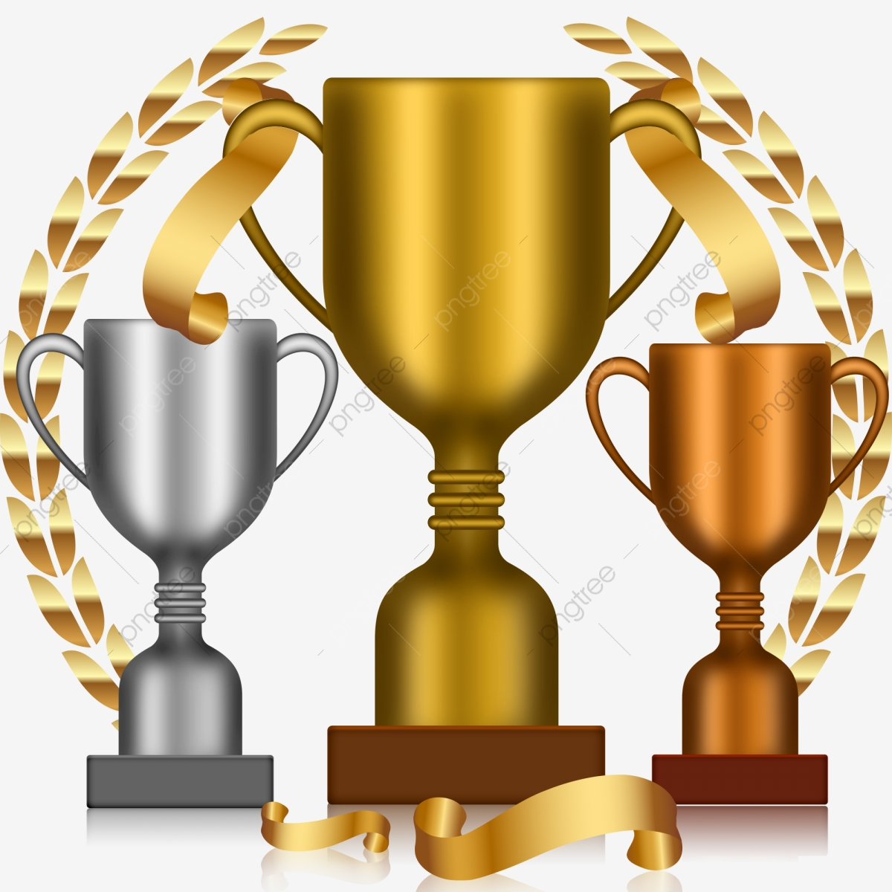

1. semestra mācību darba veiksminieku saraksts ŠEIT.
Mācībās labāko 2018./19.m.g. noslēgumā saraksts ŠEIT.
Skolēnu sasniegumi 2020./21.m.g.
Valsts mēroga konkursi
Daniela Vanceviča (12. klase) - prezidenta runas konkursa "Ko man nozīmē brīvība un demokrātija?" laureāte (sk. Daina Tauriņa).
Elizabete Krasnā (6. klase) - prezidenta runas konkursa "Ko man nozīmē brīvība un demokrātija?" laureāte (sk. Ramina Skuja).
Skolēnu sasniegumi 2019./20.m.g.
Valsts mēroga olimpiādes, konkursi, sacensības
Artis Vijups (10. klase) - 1. vieta matemātikas olimpiādē (sk. Aiga Priedniece), 1. vieta informātikas (programmēšanas) olimpiādē (sk. Ieva Hermane), 1. vieta starptautiskajā informātikas konkursā Bebr[a]s, atzinība fizikas olimpiādē (sk. Iveta Beļska).
7.kl. komanda (Līva Zuja, Anna Hrističa, Elvita Ozola, Alise Evelīna Toča un Mārtiņš Sjomkāns) - 1. vieta komandu matemātikas olimpiādē "Atvērtā kopa 2019" (sk. Aiga Priedniece, Ilze Grinšpona).
Ieva Rūtiņa-Rūtenberga (11. klase) - 1. vieta eseju konkursā "Ko mani senči sagaidīja no Latvijas valsts pirms 100 gadiem un atmodas laikos? Ko gaidu no savas valsts tagad?" (sk. Daina Tauriņa).
Daila Bluķe (11. klase) - 3. vieta eseju konkursā "Ko mani senči sagaidīja no Latvijas valsts pirms 100 gadiem un atmodas laikos? Ko gaidu no savas valsts tagad?" (sk. Daina Tauriņa).
Anna Hrističa, Alise Evelīna Toča (7. klase) - 3. vieta programmēšanas konkursā "Mēs esam ideāli"(sk. Silvija Zālīte).
Anna Gulbe (6. klase) - 3. vieta radošo darbu konkursā "Izstāsti man savu sapni"(sk. Anita Voras).
Skolēnu sasniegumi 2018./19.m.g.
Reģionālās olimpiādes, konkursi, sacensības, skates
1.-3.kl. folkloras kopa (Laura Krasta, Jānis Logins, Eduards Putniņš, Agate Bondareva, Amanda Rieksta, Nikola Zvaigzne, Gerda Dinbire, Krista Jeroščeva, Luīza Rupeika, Daniels Sokolovs, Beāte Mihalčuka, Ieva Logina, Annija Oldenburgere, Anete Titāne, Keita Titāne) - 1. pakāpe folkloras kopu skatē “Pulkā eimu, pulkā teku 2019" Piedaugavas reģionā (sk. Gita Kalniņa).
Komanda (Gustavs Dosbergs, Edvards Krasnais, Sandra Kirilova, Adele Tifanija Romano, Viesturs Skalbe, Valda Vasariete, Emīlija Ausma Širaka, Karlīna Koršuna, Marks Žihars, Kristaps Rūtiņš-Rūtenbergs, Armands Liepiņš, Indra Gāga, Markuss Feifers, Jūlija Krūmiņa) (4.-7.kl.) - 1. vieta “First Lego League Latvia” sacensībās kategorijās Projekts un Pamatvērtības (sk. Sandijs Krastiņš, Ieva Pudža, Ruta Ilgaža).
7.-9.kl. komanda (Artis Vijups, Jēkabs Čudars, Leo Kristians Spūle) - 2. vieta MTC (Meridian Trivia Competition) erudīcijas konkursā angļu valodā Rīgas reģionā (sk. Maija Rozenšteine).
Skolēnu sasniegumi 2017./18.m.g
Starpnovadu olimpiādes, sacensības un konkursi
Artis Vijups (8. klase) - 1. vieta angļu valodas olimpiādē (sk. Maija Rozenšteine), 1. vieta programmēšanas olimpiādē (sk. Ieva Hermane), 1. vieta matemātikas olimpiādē, 1. vieta tiešsaistes konkursā "Rēķini galvā!" (sk. Aiga Priedniece, Zanda Nelsone), 2. vieta vācu valodas olimpiādē (sk. Annija Sprīvule).
Aleksandra Kasakovska (10. klase) - 1. vieta matemātikas olimpiādē (sk. Aiga Priedniece), 2. vieta ģeogrāfijas olimpiādē (sk. Brigita Mežgale-Turlaja), 3. vieta vācu valodas olimpiādē (sk. Svetlana Bondarenko).
Vokālais ansamblis "Atvariņi" (Annija Austruma, Dita Dzene, Amanda Griškāne,Terēze Petkeviča, Jūlija Krūmiņa, Una Nelsone, Zane Hmeļņika, Ulla Rožkalne, Madara Šāble, Arta Vagale, Anna Geižāne, Madara Matuseviča, Dārta Novika)(1.-8. klase) - 1. pakāpe konkursā "Balsis" (sk. Aija Pizāne).
Katrīna Zaķe (12. klase) - 1. vieta filozofijas olimpiādē (sk. Daina Tauriņa), 1. vieta latviešu valodas un literatūras olimpiādē (sk. Laima Pamiljane).
Inese Meļehova (12. klase) - 1. vieta politikas zinību olimpiādē (sk. Daina Tauriņa), 2. vieta latviešu valodas un literatūras olimpiādē (sk. Laima Pamiljane), atzinība ģeogrāfijas olimpiādē (sk. Brigita Mežgale-Turlaja).
Kristers Mārtiņš Gelašs (10. klase) - 1. vieta informātikas olimpiādē (sk. Ieva Hermane), 3. vieta matemātikas olimpiādē (sk. Aiga Priedniece).
Skolēnu sasniegumi 2016./17.m.g
Valsts mēroga olimpiādes, konkursi, sacensības
Ričards Kristers Knipšis (9. klase) -1. vieta Latvijas atklātajā fizikas olimpiādē (sk. Iveta Beļska), 1. vieta Latvijas atklātajā matemātikas olimpiādē, 3. vieta starptautiskajā matemātikas konkursā "Ķengurs" Latvijā , 3. vieta Latvijas Universitātes neklātienes matemātikas skolas Profesora Cipariņa konkursā (sk. Zanda Nelsone), 3. vieta Latvijas lingvistikas olimpiādē, atzinība inženierzinātņu vidusskolas atklātajā fizikas olimpiādē.
Lidmodelistu komanda (Sandis Jurciks, Roberts Kaskevičs, Maija Marija Ozola, Rasa Strūģe) (6.-9. klase) - 2. vieta Latvijas skolēnu lidmodeļu sacensībās (sk. Aivars Ozols)
